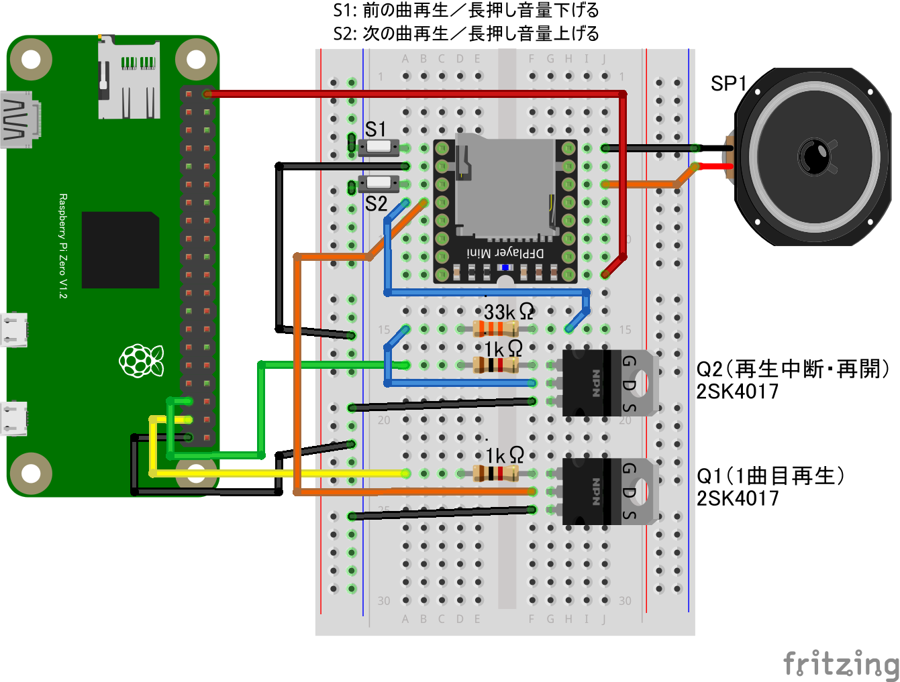

import { requestGPIOAccess } from "./node_modules/node-web-gpio/dist/index.js";
const sleep = msec => new Promise(resolve => setTimeout(resolve, msec));
let play1port;
let pauseport;
async function start_play() {
const gpioAccess = await requestGPIOAccess();
play1port = gpioAccess.ports.get(26); //
pauseport = gpioAccess.ports.get(19);
await play1port.export("out");
await pauseport.export("out");
await repeat_play();
}
async function repeat_play() {
while (true) {
// 1曲目を再生開始
console.log("start play1")
await play1port.write(1);
await sleep(300); // 0.3秒保持して元に戻す
await play1port.write(0);
// 10秒保持
await sleep(10 * 1000);
// 一時停止
console.log("stop")
await pauseport.write(1);
await sleep(300);
await pauseport.write(0);
// 3秒間一時停止
await sleep(3 * 1000);
}
}
start_play();GPIO 端子の使用数を増やすと制御できる種類も増やせます。